|
|
|
|
|
|
|
| 18 X3D Scenes | Scene Descriptions | |
|---|---|---|
| Figure 03.01 Default Box | Default Box uses default values | |
| 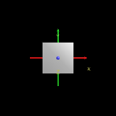 | Figure 03.01 Default Box With Axes | Default Box uses default values, coordinate axes superimposed to show X3D/VRML directions |
| Figure 03.02 Resized Box | Resized Box with a small width, a medium height, and a large depth | |
| 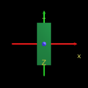 | Figure 03.02 Resized Box With Axes | Resized Box with a small width, a medium height, and a large depth. Coordinate axes superimposed to show X3D/VRML directions. |
| Figure 03.0 3Default Cone | Default Cone. | |
| 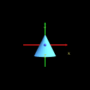 | Figure 03.0 3Default Cone With Axes | Default Cone with coordinate axes superimposed to show X3D/VRML directions. |
| 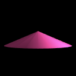 | Figure 03.04 Flattened Cone | Flattened Cone: a cone with a large bottom radius and a short height |
| 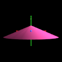 | Figure 03.04 Flattened Cone With Axes | Flattened Cone: a cone with a large bottom radius and a short height, with coordinate axes superimposed to show X3D/VRML directions |
| Figure 03.05 Default Cylinder | Default Cylinder | |
| 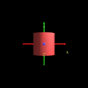 | Figure 03.05 Default Cylinder With Axes | Default Cylinder, with coordinate axes superimposed to show X3D/VRML directions |
| 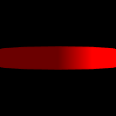 | Figure 03.06 Resized Cylinder | Resized Cylinder: a cylinder with a large radius and a short height |
| 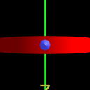 | Figure 03.06 Resized Cylinder With Axes | Resized Cylinder: a cylinder with a large radius and a short height, with coordinate axes superimposed to show X3D/VRML directions |
| 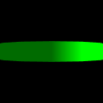 | Figure 03.07 Resized Cylinder Hollow | Resized Cylinder Hollow: a cylinder with a large radius, short height, no top and no bottom |
| 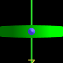 | Figure 03.07 Resized Cylinder Hollow With Axes | Resized Cylinder Hollow: a cylinder with a large radius, short height, no top and no bottom, with coordinate axes superimposed to show X3D/VRML directions |
| 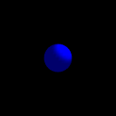 | Figure 03.08 Default Sphere | Default Sphere |
| 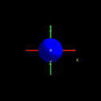 | Figure 03.08 Default Sphere With Axes | Default Sphere, with coordinate axes superimposed to show X3D/VRML directions |
| Figure 03.09 3D Plus Sign | 3D Plus Sign is made out of three perpendicular Boxes - rotate and examine to see | |
| 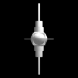 | Figure 03.10 Space Station | Space Station, or spark plug? You decide... Also see Figure10.05MultiColoredSpaceStation.x3d, Figure10.06PulsatingSpaceStation.x3d, Figure10.10SemiTransparentSpaceStation.x3d and Figure10.11AnimatingTransparencySpaceStation.x3d |
Online at http://www.web3d.org/x3d/content/examples/Vrml2Sourcebook/Chapter03-Shapes
Master source code archive is under subversion control at
http://sourceforge.net/p/x3d/code/HEAD/tree/www.web3d.org/x3d/content/examples/Vrml2Sourcebook/Chapter03-Shapes
|
|
|
|
|
|
Also available: current and archived nightly builds and distributions of these examples, all published under an Open-Source License.
The X3D Resources: Examples page and Savage Developers Guide provide more information about the production of this archive.